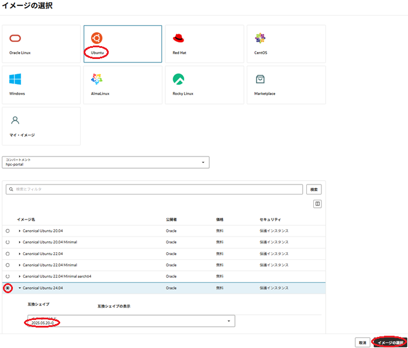

注意 : 本コンテンツ内の画面ショットは、現在のOCIコンソール画面と異なっている場合があります。
0. 概要
クラスタ・ネットワーク への接続は、使用するインスタンスが以下の接続条件を満たし、このインスタンス作成後に以下の接続処理を完了する必要があります。
[接続条件]
- クラスタ・ネットワーク 対応シェイプ（ ここ を参照）を使用している
- クラスタ・ネットワーク の作成に伴って作成されている
- クラスタ・ネットワーク 接続に必要な以下ソフトウェアがインストールされている
- Mellanox OFED
- WPAサプリカント（※1）
- 802.1X認証関連ユーティリティソフトウェア
- クラスタ・ネットワーク 設定ユーティリティソフトウェア
※1）クラスタ・ネットワーク は、インスタンスが接続する際802.1X認証を要求しますが、この処理を行うクライアントソフトウェアがWPAサプリカントです。802.1X認証の仕組みは、 ここ のサイトが参考になります。
[接続処理]
- クラスタ・ネットワーク との802.1X認証（接続条件 3-3. が実施）
- クラスタ・ネットワーク 接続用ネットワークインターフェース作成（接続条件 3-4. が実施）
接続条件 3. のソフトウェアは、ベースとなるOSに Oracle Linux を使用する クラスタネットワーキングイメージ には予めインストールされていますが、 Rocky Linux ・ CentOS ・ Ubuntu でもこれらのソフトウェアを自身でインストールすることで クラスタ・ネットワーク に接続することが可能で、本テクニカルTipsではこの方法を解説します。
接続条件 3-3. のソフトウェアは、oci-cn-auth（※2）を使用する方法と Oracle Cloud Agent （以降 OCA と呼称）の Compute HPC RDMA Authentication プラグインを利用する方法があり、 接続条件 3-4. のソフトウェアは、OSの機能を使用する方法と OCA の Compute HPC RDMA Auto-Configuration プラグインを利用する方法があります。
ここで OCA が Ubuntu に対応していることから、本テクニカルTipsではOSが Ubuntu の場合は OCA のHPC関連プラグインを使用する手順を解説し、 Rocky Linux と CentOS の場合はoci-cn-authとOSの機能を使用する手順を解説します。
※2）クラスタ・ネットワーク に接続する際の802.1X認証で必要な認証処理機能を提供するユーティリティーソフトウェアで、GitHubから公開されています。
これらソフトウェアのインストールは、手順が多く相応の所要時間が必要なため、予め最小ノード（2ノード）のクラスタを構築してこの計算/GPUノードにこれらのソフトウェアをインストール、この計算/GPUノードの カスタム・イメージ で本運用に供するHPC/GPUクラスタを構築します。
以上より、 クラスタ・ネットワーク 未対応OSを使ったHPC/GPUクラスタの構築は、以下の手順を経て行います。
- カスタム・イメージ 取得用2ノードHPC/GPUクラスタ構築
- クラスタ・ネットワーク 接続用ソフトウェアインストール
- クラスタ・ネットワーク 接続・確認
- カスタム・イメージ 取得
- cloud-init 設定ファイル（cloud-config）作成
- カスタム・イメージ とcloud-configを指定した インスタンス構成 作成
- インスタンス構成 を指定した クラスタ・ネットワーク 作成
以降は、下表の組み合わせの クラスタ・ネットワーク 対応シェイプとOSで作成した計算/GPUノードを クラスタ・ネットワーク に接続する手順を解説します。
| No. | クラスタ・ネットワーク対応シェイプ | OS |
|---|---|---|
| 1 | BM.Optimized3.36 | Rocky Linux 8.7（※3） |
| 2 | CentOS 7.9 | |
| 3 | Ubuntu 20.04 / Ubuntu 22.04 / Ubuntu 24.04（※4） | |
| 4（※5） | BM.GPU4.8/BM.GPU.A100-v2.8 | Ubuntu 20.04 / Ubuntu 22.04 （※4） |
※3）手順中のOSアップデートで最終的には8.9になります。
※4）バージョンが異なることによる違いは以下2項目のみで、それ以外は共通の手順を使用します。
- カスタム・イメージ取得用2ノードHPC/GPUクラスタ構築時の計算/GPUノードに使用するOSイメージ
- Mellanox OFED ダウンロード・インストール時に使用するISOイメージファイル
※5）この組み合わせの手順は、 OCI HPCチュートリアル集 の GPUクラスタを構築する(Ubuntu OS編) を参照してください。
1. カスタム・イメージ取得用2ノードHPC/GPUクラスタ構築
本章は、 クラスタ・ネットワーク に接続するためのソフトウェアをインストールした カスタム・イメージ を取得するため、2ノードのHPCクラスタを構築します。
このHPCクラスタは、 OCI HPCチュートリアル集 の HPCクラスタを構築する(基礎インフラ手動構築編) を活用し、このチュートリアルの以下の章を実施することで、その構築を行います。
この際、上記チュートリアルに対して、以下の点を変更して実施します。
-
cloud-config適用除外
2-1. cloud-config作成 で作成しているcloud-configは、その処理内容をカスタム・イメージ取得用の計算ノードに適用する必要が無いため、作成しません。
またこれに伴い、後の 2-2. インスタンス構成作成 の 7 管理フィールド で指定しているcloud-configの適用も、実施しません。 -
イメージ変更
2-2. インスタンス構成作成 の 4 イメージとシェイプ フィールド で指定するイメージは、 使用するOSが Rocky Linux 、 CentOS 、又は Ubuntu かに合わせて、以下を指定します。- イメージ ：Rocky Linux 8.7 - Free(x86_64) (イメージの変更 ボタンをクリックして表示される以下 Select an image サイドバーで Rocky Linux を選択し表示される Rocky Linux 8.7 - Free(x86_64) を選択して表示される イメージ・ビルド フィールドで 8.7.3 （選択できなければ最新を選択）を選択し イメージの選択 ボタンをクリック）

- イメージ ：CentOS 7 (イメージの変更 ボタンをクリックして表示される以下 イメージの選択 サイドバーで CentOS を選択し表示される CentOS 7 を選択して表示される イメージ・ビルド フィールドで 2023.04.20-0 （選択できなければ最新を選択）を選択し イメージの選択 ボタンをクリック）
- イメージ ：Canonical Ubuntu 2x.04 (イメージの変更 ボタンをクリックして表示される以下 イメージの選択 サイドバーで Ubuntu を選択し表示される Canonical Ubuntu 2x.04 を選択して表示される イメージ・ビルド フィールドで 2025.05.20-0 （選択できなければ最新を選択）を選択し イメージの選択 ボタンをクリック）

-
OCA 有効化のスキップ
2-2. インスタンス構成作成 の 8 Oracle Cloudエージェント フィールド で有効化している OCA の Compute HPC RDMA Auto-Configuration と Compute HPC RDMA Authentication のプラグインは、 Rocky Linux と CentOS では OCA を使用せず、 Ubuntu ではのちの手順で有効化を行うため、何れのOSの場合もここでは有効化を行いません。
2. クラスタ・ネットワーク接続用ソフトウェアインストール
2-0. 概要
本章は、 クラスタ・ネットワーク に接続するためのソフトウェアのインストールを、 Rocky Linux 8.7、 CentOS 7.9、及び Ubuntu に分けて解説します。
以下は、その手順概要です。
- カスタム・イメージ 取得用計算/GPUノードへのログインと事前準備
- Mellanox OFED ダウンロード・インストール
- WPAサプリカントインストール・ OCA HPC関連プラグイン有効化（OSが Ubuntu の場合）
- WPAサプリカント・oci-cn-authインストール（OSが Ubuntu 以外の場合）
なお本章の作業は、2台の計算/GPUノードの何れにも実施します。
2-1. Rocky Linux 8.7の場合
2-1-1. カスタム・イメージ取得用計算ノードへのログインと事前準備
本章は、 カスタム・イメージ 取得用計算ノードにログインし、以降の作業に必要な事前準備として以下の作業を行います。
- SELinux無効化
- インスタンス名による名前解決設定適用
-
計算ノードログイン
2-1. 計算ノードログイン の手順に従い実施しますが、この際Rocky Linuxのインストール時に作成されるログインユーザが rocky であることを考慮し、以下のようにBastionノードからrockyユーザでSSHログインします。$ ssh rocky@inst-wyr6m-comp -
SELinux無効化
以下コマンドを計算ノードのrockyユーザで実行し、SELinuxを無効化します。$ sudo setenforce 0 $ sudo sed -i 's/SELINUX=enforcing/SELINUX=disabled/g' /etc/selinux/config -
インスタンス名による名前解決設定適用
以降作成する計算ノードの名前解決をインスタンス名で行うため、 OCI HPCテクニカルTips集 の 計算/GPUノードの効果的な名前解決方法 の手順を計算ノードに適用します。
2-1-2. Mellanox OFEDダウンロード・インストール
本章は、 Mellanox OFED ISOイメージファイルをNVIDIAのウェブサイトからダウンロードし、これをインストールします。
Mellanox OFED ISOイメージファイルのダウンロードは、以下のサイトから行います。
https://network.nvidia.com/products/infiniband-drivers/linux/mlnx_ofed/
この際、以下のメニューを選択し、ISOイメージ MLNX_OFED_LINUX-23.10-2.1.3.1-rhel8.9-x86_64.iso を入手し、このファイルを計算ノードのrockyユーザのホームディレクトリ直下にコピーします。

次に、以下コマンドを計算ノードのrockyユーザで実行し、 Mellanox OFED の前提パッケージをインストール後OSをアップデートします。
$ sudo dnf install -y perl pciutils pkgconf-pkg-config lsof tk kernel-modules-extra tcl gcc-gfortran
$ sudo dnf update -y
次に、以下コマンドを計算ノードのrockyユーザで実行し、アップデートしたOSを有効化するためにOSを再起動します。
$ sudo shutdown -r now
次に、以下コマンドを計算ノードのrockyユーザで実行し、 Mellanox OFED をインストールします。
$ sudo mkdir /mnt/iso && sudo mount -o ro,loop ~/MLNX_OFED_LINUX-23.10-2.1.3.1-rhel8.9-x86_64.iso /mnt/iso
$ cd /mnt/iso && sudo ./mlnxofedinstall --without-fw-update -q
次に、以下コマンドを計算ノードのrockyユーザで実行し、OSを再起動します。
$ sudo shutdown -r now
2-1-3. WPAサプリカント・oci-cn-authインストール
以下コマンドを計算ノードのrockyユーザで実行し、WPAサプリカントとoci-cn-authをインストールします。
$ sudo dnf install -y wpa_supplicant ruby rpm-build python3-psutil python3-pyOpenSSL git
$ gem install dotenv -v 2.8.1
$ gem install fpm
$ git clone https://github.com/MarcinZablocki/oci-cn-auth
$ cd oci-cn-auth && make
$ sudo rpm -ivh ./oci-cn-auth-0.2.11-4.el8.noarch.rpm
2-2. CentOS 7.9の場合
2-2-1. カスタム・イメージ取得用計算ノードへのログインと事前準備
本章は、 カスタム・イメージ 取得用計算ノードにログインし、以降の作業に必要な事前準備として以下の作業を行います。
- firewalld停止
- SELinux無効化
計算ノードへのログインは、 2-1. 計算ノードログイン の手順に従い実施します。
- firewalld停止
以下コマンドを計算ノードのopcユーザで実行し、firewalldを停止します。
$ sudo systemctl disable --now firewalld
- SELinux無効化
以下コマンドを計算ノードのopcユーザで実行し、SELinuxを無効化します。
$ sudo setenforce 0
$ sudo sed -i 's/SELINUX=enforcing/SELINUX=disabled/g' /etc/selinux/config
2-2-2. Mellanox OFEDダウンロード・インストール
本章は、 Mellanox OFED ISOイメージファイルをNVIDIAのウェブサイトからダウンロードし、これをインストールします。
Mellanox OFED ISOイメージファイルのダウンロードは、以下のサイトから行います。
https://network.nvidia.com/products/infiniband-drivers/linux/mlnx_ofed/
この際、以下のメニューを選択し、ISOイメージ MLNX_OFED_LINUX-5.4-3.6.8.1-rhel7.9-x86_64.iso を入手し、このファイルを計算ノードのopcユーザのホームディレクトリ直下にコピーします。

次に、 Mellanox OFED をインストールするため、以下コマンドを計算ノードのopcユーザで実行します。
$ sudo yum install -y python-devel kernel-devel-`uname -r` redhat-rpm-config createrepo rpm-build tcl gcc-gfortran tk automake libtool autoconf fuse-libs
$ sudo mkdir /mnt/iso && sudo mount -o ro,loop ~/MLNX_OFED_LINUX-5.4-3.6.8.1-rhel7.9-x86_64.iso /mnt/iso
$ cd /mnt/iso && sudo ./mlnxofedinstall --add-kernel-support --without-fw-update -q
$ sudo dracut -f
次に、インストールした Mellanox OFED を有効化するため、OSを再起動します。
2-2-3. oci-cn-authインストール
以下コマンドを計算ノードのopcユーザで実行し、oci-cn-authをインストールします。
$ sudo yum install -y centos-release-scl
$ sudo yum install -y git rh-ruby30 rpm-build python36-pyOpenSSL python36-psutil python36-jinja2 python36-requests python36-cryptography
$ scl enable rh-ruby30 bash
$ gem install fpm
$ git clone https://github.com/MarcinZablocki/oci-cn-auth
$ cd oci-cn-auth && make
$ sudo rpm -ivh ./oci-cn-auth-0.2.11-4.el7.noarch.rpm
2-3. Ubuntuの場合
2-3-1. カスタム・イメージ取得用計算/GPUノードへのログインと事前準備
本章は、 カスタム・イメージ 取得用計算/GPUノードにログインし、以降の作業に必要な事前準備として以下の作業を行います。
- OS自動アップデート停止
- iptables停止
- インスタンス名による名前解決設定適用
- 前提条件ソフトウェアインストール
計算/GPUノードへのログインは、 3-1. 計算ノードログイン （ BM.Optimized3.36 の場合）/ 3-1. GPUノードログイン （ BM.GPU4.8/BM.GPU.A100-v2.8 の場合）の手順に従い実施しますが、この際 Ubuntu のインストール時に作成されるログインユーザが ubuntu であることを考慮し、以下のようにBastionノードからubuntuユーザでSSHログインします。
$ ssh ubuntu@inst-wyr6m-comp
次に、以下コマンドをGPUインスタンスのubuntuユーザで実行し、OSの自動アップデートを停止します。
この手順は、以降の作業でカーネルのバージョンに依存するカーネルモジュールのロードを行うため、それ以降の意図せぬカーネルの自動アップデートを避けるために実施します。
$ sudo cp -p /etc/apt/apt.conf.d/20auto-upgrades /tmp/
$ sudo sed -i 's/Upgrade "1"/Upgrade "0"/g' /etc/apt/apt.conf.d/20auto-upgrades
$ sudo sed -i 's/Lists "1"/Lists "0"/g' /etc/apt/apt.conf.d/20auto-upgrades
$ sudo diff /tmp/20auto-upgrades /etc/apt/apt.conf.d/20auto-upgrades
1,2c1,2
< APT::Periodic::Update-Package-Lists "1";
< APT::Periodic::Unattended-Upgrade "1";
---
> APT::Periodic::Update-Package-Lists "0";
> APT::Periodic::Unattended-Upgrade "0";
$ sudo systemctl disable --now unattended-upgrades
Synchronizing state of unattended-upgrades.service with SysV service script with /usr/lib/systemd/systemd-sysv-install.
Executing: /usr/lib/systemd/systemd-sysv-install disable unattended-upgrades
Removed "/etc/systemd/system/multi-user.target.wants/unattended-upgrades.service".
$
次に、以下コマンドを計算/GPUノードのubuntuユーザで実行し、iptablesを停止します。
$ sudo iptables -P INPUT ACCEPT
$ sudo iptables -P OUTPUT ACCEPT
$ sudo iptables -P FORWARD ACCEPT
$ sudo iptables -F
$ sudo systemctl disable --now iptables
次に、以降作成する計算/GPUノードの名前解決をインスタンス名で行うため、 OCI HPCテクニカルTips集 の 計算/GPUノードの効果的な名前解決方法 の手順を計算/GPUノードに適用します。
次に、以下コマンドを計算/GPUノードのubuntuユーザで実行し、前提条件ソフトウェアをインストールします。
$ sudo apt-get update
$ sudo apt-get install -y libnuma-dev ifupdown
2-3-2. Mellanox OFEDダウンロード・インストール
本章は、 Mellanox OFED ISOイメージファイルをNVIDIAのウェブサイトからダウンロードし、これをインストールします。
Mellanox OFED ISOイメージファイルのダウンロードは、以下のサイトから行います。
https://network.nvidia.com/products/infiniband-drivers/linux/mlnx_ofed/
この際、以下メニューを選択して Ubuntu のバージョンに合わせたISOイメージファイルを入手し、このファイルを計算/GPUノードのubuntuユーザのホームディレクトリ直下にコピーします。
[ Ubuntu 20.04の場合]

[ Ubuntu 22.04の場合]

[ Ubuntu 24.04の場合]

次に、以下コマンドを計算/GPUノードのubuntuユーザで実行し、 Mellanox OFED をインストールします。
この際、ISOイメージのファイル名は、使用する Ubuntu のバージョンに合わせて変更します。
$ sudo mkdir /mnt/iso && sudo mount -o ro,loop ~/MLNX_OFED_LINUX-2x.xx-x.x.x.x-ubuntu2x.04-x86_64.iso /mnt/iso
$ cd /mnt/iso && sudo ./mlnxofedinstall --without-fw-update -q
次に、OCIコンソールからGPUインスタンスを再起動します。
この再起動は、 BM.GPU4.8 の場合でSSHログインできるまでに20分程度かかります。
2-3-3. WPAサプリカントインストール・OCA HPC関連プラグイン有効化
本章は、WPAサプリカントのインストールと OCA HPC関連プラグインの有効化を実施し、 0. 概要 で説明した クラスタ・ネットワーク 接続に必要な接続処理を実施します。
以下コマンドを計算/GPUノードのubuntuユーザで実行し、WPAサプリカントと OCA HPC関連プラグインの前提条件ソフトウェアをインストールします。
$ sudo apt-get install -y wpasupplicant mstflint
次に、 Compute HPC RDMA Auto-Configuration プラグインの設定ファイル /etc/oracle-cloud-agent/plugins/oci-hpc/oci-hpc-configure/rdma_network.json を以下の内容で作成します。
なおこの設定ファイルは、使用するシェイプが BM.GPU4.8/BM.GPU.A100-v2.8 の場合のみ作成します。
{
"rdma-network": [
{
"default-settings": {
"rdma_network": "192.168.0.0/16",
"overwrite_config_files": false,
"single_subnet": true,
"modify_subnet": true,
"modify_arp": true
},
"subnet-settings": {
"netmask": "255.255.0.0",
"override_netconfig_netmask": "255.255.0.0"
},
"arp-settings": {
"rp_filter": "0",
"arp_ignore": "1",
"arp_announce": "2",
"accept_local": "1",
"arp_filter": "1"
}
}
]
}
次に、OCIコンソールにログインし、以下対象の計算/GPUノードの インスタンスの詳細 画面で 管理 タブをクリックし、 Compute HPC RDMA Auto-Configuration プラグインと Compute HPC RDMA Authentication プラグインの 有効化 ボタンをクリックします。
次に、以下コマンドを計算/GPUノードのubuntuユーザで実行し、 wpa_supplicant のプロセスが クラスタ・ネットワーク に接続するポートの数だけ動作し、802.1X認証が通っていることを確認します。
なおこの結果が得られるまで、 OCA HPC関連プラグインの有効化を実施してから20分程度の時間を要します。
以下は、16ポートを有する BM.GPU4.8 の実行例です。
$ ps -leaf | grep wpa_supplicant-en | grep -v grep | wc -l
16
$ grep state= /var/log/oracle-cloud-agent/plugins/oci-hpc/oci-rdma-authentication/oci-rdma-authentication.log | tail -3
wpa_state=COMPLETED
Supplicant PAE state=AUTHENTICATED
EAP state=SUCCESS
$
3. クラスタ・ネットワーク接続・確認
3-0. 概要
本章は、計算/GPUノードの クラスタ・ネットワーク への接続に必要な設定を行い、 Mellanox OFED に含まれる OpenMPI と Intel MPI Benchmarks を使用してその性能を確認します。
なおこれらの手順は、使用するOSやシェイプによってその手順が異なるため、以下のパターンに分けてそれぞれ解説します。
3-1. Rocky Linux 8.7
3-1-1. クラスタ・ネットワーク接続用ネットワークインターフェース作成
本章は、 クラスタ・ネットワーク 接続用のネットワークインターフェースを作成し、 クラスタ・ネットワーク への接続を確認します。
この作業は、2台の計算ノードの何れにも実施します。
クラスタ・ネットワーク 接続用のネットワークインターフェースを作成するため、以下コマンド群（※5）を計算ノードのrockyユーザで実行します。
$ sudo nmcli connection add con-name cluster-network ifname eth2 type ethernet
$ sudo nmcli connection modify cluster-network ipv4.addresses 192.168.0.`ip a s dev eth0 | grep 'inet ' | awk '{print $2}' | awk -F/ '{print $1}' | awk -F. '{print $4}'`/24
$ sudo nmcli connection modify cluster-network ipv4.method manual
$ sudo nmcli connection up cluster-network
※5）本コマンド群は、 仮想クラウド・ネットワーク に接続するプライマリVNICに割り当てるサブネットマスクが24ビットの場合のみ動作します。
次に、以下コマンドを計算ノードのrockyユーザで実行します。
$ sudo systemctl enable --now oci-cn-auth.timer
次に、802.1X認証が通ったことを確認するため、以下コマンドを計算ノードのrockyユーザで実行し、その出力を確認します。
$ sudo wpa_cli status | grep state
wpa_state=COMPLETED
Supplicant PAE state=AUTHENTICATED
EAP state=SUCCESS
$
3-1-2. Intel MPI Benchmarks実行
本章は、 クラスタ・ネットワーク に接続した計算/GPUノードで十分なインターコネクト性能が出ていることを確認するため、 Intel MPI Benchmarks Ping-Pongを実行し、その結果を確認します。
以下コマンドをBastionノードのopcユーザで実行し、BastionノードのSSH秘密鍵を全ての計算ノードにコピーすることで、全ての計算ノード間でrockyユーザのパスフレーズ無しSSH接続環境を構築します。
$ for hname in `cat ~/hostlist.txt`; do echo $hname; scp -oStrictHostKeyChecking=accept-new -p ~/.ssh/id_rsa rocky@$hname:~/.ssh/; done
$ for hname in `cat ~/hostlist.txt`; do echo $hname; scp -p ~/.ssh/known_hosts rocky@$hname:~/.ssh/; done
次に、以下コマンドをBastionノードのopcユーザで実行し、後の Intel MPI Benchmarks Ping-Pongを実行する際に使用する計算ノードのホスト名リストを全計算ノードにコピーします。
なお、ホスト名リストを作成していない場合は、 OCI HPCテクニカルTips集 の 計算/GPUノードのホスト名リスト作成方法 を参照してこれを作成し、Bastionノードのopcユーザのホームディレクトリにファイル名 hostlist.txt で配置します。
$ for hname in `cat ~/hostlist.txt`; do echo $hname; scp -p ./hostlist.txt rocky@$hname:~/; done
次に、以下コマンドを何れか1台の計算ノードのrockyユーザで実行し、 Intel MPI Benchmarks Ping-Pongを実行します。
$ source /usr/mpi/gcc/openmpi-4.1.7a1/bin/mpivars.sh
$ mpirun -n 2 -N 1 -hostfile ~/hostlist.txt -x UCX_NET_DEVICES=mlx5_2:1 /usr/mpi/gcc/openmpi-4.1.7a1/tests/imb/IMB-MPI1 -msglog 27:28 pingpong
3-2. CentOS 7.9
3-2-1. クラスタ・ネットワーク接続用ネットワークインターフェース作成
本章は、 クラスタ・ネットワーク 接続用のネットワークインターフェースを作成し、 クラスタ・ネットワーク への接続を確認します。
この作業は、2台の計算ノードの何れにも実施します。
クラスタ・ネットワーク 接続用のネットワークインターフェースを作成するため、以下のスクリプトを作成して実行権を与えます。
[oci-rdma-configure-rh7.sh]
#!/bin/bash
echo "TYPE=\"Ethernet\"" > /etc/sysconfig/network-scripts/ifcfg-ens800f0
echo "BOOTPROTO=\"none\"" >> /etc/sysconfig/network-scripts/ifcfg-ens800f0
echo "IPADDR=192.168.0.`ifconfig ens300f0 | grep "inet " | awk '{print $2}' | awk -F. '{print $4}'`" >> /etc/sysconfig/network-scripts/ifcfg-ens800f0
echo "NETMASK=255.255.255.0" >> /etc/sysconfig/network-scripts/ifcfg-ens800f0
echo "DEFROUTE=\"no\"" >> /etc/sysconfig/network-scripts/ifcfg-ens800f0
echo "PEERDNS=\"no\"" >> /etc/sysconfig/network-scripts/ifcfg-ens800f0
echo "PEERROUTES=\"no\"" >> /etc/sysconfig/network-scripts/ifcfg-ens800f0
echo "IPV4_FAILURE_FATAL=\"no\"" >> /etc/sysconfig/network-scripts/ifcfg-ens800f0
echo "IPV6INIT=\"no\"" >> /etc/sysconfig/network-scripts/ifcfg-ens800f0
echo "IPV6_FAILURE_FATAL=\"no\"" >> /etc/sysconfig/network-scripts/ifcfg-ens800f0
echo "NAME=\"System ens800f0\"" >> /etc/sysconfig/network-scripts/ifcfg-ens800f0
echo "DEVICE=\"ens800f0\"" >> /etc/sysconfig/network-scripts/ifcfg-ens800f0
echo "ONBOOT=\"yes\"" >> /etc/sysconfig/network-scripts/ifcfg-ens800f0
echo "NM_CONTROLLED=\"no\"" >> /etc/sysconfig/network-scripts/ifcfg-ens800f0
ifup ens800f0
次に、以下コマンドを計算ノードのopcユーザで実行します。
$ sudo ./oci-rdma-configure-rh7.sh
次に、802.1X認証が通ったことを確認するため、以下コマンドを計算ノードのopcユーザで実行し、その出力を確認します。
$ sudo wpa_cli status | grep state
wpa_state=COMPLETED
Supplicant PAE state=AUTHENTICATED
EAP state=SUCCESS
$
3-2-2. Intel MPI Benchmarks実行
OCI HPCチュートリアル集 の HPCクラスタを構築する(基礎インフラ手動構築編) の 3. MPIプログラム実行（2ノード編） の手順に従い、 Intel MPI Benchmarks Ping-Pongを実行します。
3-3. Ubuntu on BM.Optimized3.36
3-3-1. クラスタ・ネットワーク接続用ネットワークインターフェース作成
クラスタ・ネットワーク 接続用のネットワークインターフェースは、先の 2-3-3 WPAサプリカントインストール・OCA HPC関連プラグイン有効化 により既に作成されているため、ここではその確認のみ行います。
この作業は、2台の計算ノードの何れにも実施します。
以下コマンドを計算ノードのubuntuユーザで実行し、 クラスタ・ネットワーク 接続用のネットワークインターフェースにIPアドレスが設定されていることを確認します。
$ ip a s dev ens800f0np0 | grep 'inet '
inet 192.168.0.xxx/24 brd 192.168.0.255 scope global ens800f0np0
$
3-3-2. Intel MPI Benchmarks実行
以下コマンドをBastionノードのopcユーザで実行し、BastionノードのSSH秘密鍵を全ての計算ノードにコピーすることで、全ての計算ノード間でubuntuユーザのパスフレーズ無しSSH接続環境を構築します。
$ for hname in `cat ~/hostlist.txt`; do echo $hname; scp -oStrictHostKeyChecking=accept-new -p ~/.ssh/id_rsa ubuntu@$hname:~/.ssh/; done
$ for hname in `cat ~/hostlist.txt`; do echo $hname; scp -p ~/.ssh/known_hosts ubuntu@$hname:~/.ssh/; done
次に、以下コマンドをBastionノードのopcユーザで実行し、後の Intel MPI Benchmarks Ping-Pongを実行する際に使用する計算ノードのホスト名リストを全計算ノードにコピーします。
なお、ホスト名リストを作成していない場合は、 OCI HPCテクニカルTips集 の 計算/GPUノードのホスト名リスト作成方法 を参照してこれを作成し、Bastionノードのopcユーザのホームディレクトリにファイル名 hostlist.txt で配置します。
$ for hname in `cat ~/hostlist.txt`; do echo $hname; scp -p ~/hostlist.txt ubuntu@$hname:~/; done
次に、以下コマンドを何れか1台の計算ノードのubuntuユーザで実行し、 Intel MPI Benchmarks Ping-Pongを実行します。
$ export MPIROOT=/usr/mpi/gcc/openmpi-4.1.7rc1
$ export PATH=${MPIROOT}/bin:${PATH}
$ export LD_LIBRARY_PATH=${MPIROOT}/lib:${LD_LIBRARY_PATH}
$ mpirun -n 2 -N 1 -hostfile ~/hostlist.txt -x UCX_NET_DEVICES=mlx5_2:1 /usr/mpi/gcc/openmpi-4.1.7rc1/tests/imb/IMB-MPI1 -msglog 27:28 pingpong
3-4. Ubuntu on BM.GPU4.8/BM.GPU.A100-v2.8
3-4-1. クラスタ・ネットワーク接続用ネットワークインターフェース作成
クラスタ・ネットワーク 接続用の16ポートのネットワークインターフェースは、先の 2-3-3 WPAサプリカントインストール・OCA HPC関連プラグイン有効化 により既に作成されているため、ここではその確認のみ行います。
この作業は、2台のGPUノードの何れにも実施します。
以下コマンドをGPUノードのubuntuユーザで実行し、
$ ip a | grep -E "en[p,s][1-3,5-9]" | grep inet
クラスタ・ネットワーク 接続用の16個のネットワークインターフェースに以下のIPアドレスが設定されていることを確認します。
なお x は、 VCN に接続するプライマリVNICに割り当てられるIPアドレスの4フィールド目の値です。
| ネットワークインターフェース名 | IPアドレス |
|---|---|
| enp12s0f0np0 | 192.168.0.x/16 |
| enp12s0f1np1 | 192.168.1.x/16 |
| enp22s0f0np0 | 192.168.2.x/16 |
| enp22s0f1np1 | 192.168.3.x/16 |
| enp72s0f0np0 | 192.168.4.x/16 |
| enp72s0f1np1 | 192.168.5.x/16 |
| enp76s0f0np0 | 192.168.6.x/16 |
| enp76s0f1np1 | 192.168.7.x/16 |
| enp138s0f0np0 | 192.168.8.x/16 |
| enp138s0f1np1 | 192.168.9.x/16 |
| enp148s0f0np0 | 192.168.10.x/16 |
| enp148s0f1np1 | 192.168.11.x/16 |
| enp195s0f0np0 | 192.168.12.x/16 |
| enp195s0f1np1 | 192.168.13.x/16 |
| enp209s0f0np0 | 192.168.14.x/16 |
| enp209s0f1np1 | 192.168.15.x/16 |
3-4-2. Intel MPI Benchmarks実行
以下コマンドをBastionノードのopcユーザで実行し、BastionノードのSSH秘密鍵を全てのGPUノードにコピーすることで、全てのGPUノード間でubuntuユーザのパスフレーズ無しSSH接続環境を構築します。
$ for hname in `cat ~/hostlist.txt`; do echo $hname; scp -oStrictHostKeyChecking=accept-new -p ~/.ssh/id_rsa ubuntu@$hname:~/.ssh/; done
$ for hname in `cat ~/hostlist.txt`; do echo $hname; scp -p ~/.ssh/known_hosts ubuntu@$hname:~/.ssh/; done
次に、以下コマンドをBastionノードのopcユーザで実行し、後の Intel MPI Benchmarks Ping-Pongを実行する際に使用するGPUノードのホスト名リストを全GPUノードにコピーします。
なお、ホスト名リストを作成していない場合は、 OCI HPCテクニカルTips集 の 計算/GPUノードのホスト名リスト作成方法 を参照してこれを作成し、Bastionノードのopcユーザのホームディレクトリにファイル名 hostlist.txt で配置します。
$ for hname in `cat ~/hostlist.txt`; do echo $hname; scp -p ~/hostlist.txt ubuntu@$hname:~/; done
次に、以下コマンドを何れか1台のGPUノードのubuntuユーザで実行し、 Intel MPI Benchmarks Ping-Pongを実行して16ポート全てのレイテンシとスループットを確認します。
なおこのレイテンシとスループットは、計測する2ノードが同一ラックに搭載されているかどうかにより大きく異なり、以下は同一ラックに搭載されている場合の出力例です。異なるラックに搭載されている場合は、レイテンシが 4 us 弱、スループットが 12 GB/s 弱となります。
$ for i in `seq 0 3; seq 6 17`; do dev_name="mlx5_"${i}":1"; echo ${dev_name}; /usr/mpi/gcc/openmpi-4.1.7rc1/bin/mpirun -n 2 -N 1 -hostfile ~/hostlist.txt -x UCX_NET_DEVICES=${dev_name} /usr/mpi/gcc/openmpi-4.1.7rc1/tests/imb/IMB-MPI1 -msglog 27:28 pingpong | tail -12 | head -8; echo; done
mlx5_0:1
#---------------------------------------------------
# Benchmarking PingPong
# #processes = 2
#---------------------------------------------------
#bytes #repetitions t[usec] Mbytes/sec
0 1000 2.33 0.00
134217728 1 10978.10 12225.96
268435456 1 21950.63 12229.06
:
:
:
mlx5_17:1
#---------------------------------------------------
# Benchmarking PingPong
# #processes = 2
#---------------------------------------------------
#bytes #repetitions t[usec] Mbytes/sec
0 1000 2.51 0.00
134217728 1 11005.68 12195.31
268435456 1 22054.96 12171.21
$
4. カスタム・イメージ取得
4-0. 概要
本章は、 カスタム・イメージ 取得用2ノードHPC/GPUクラスタの計算/GPUノードのうちどちらか一台で、 カスタム・イメージ を取得します。 以下は、その手順概要です。
4-1. カスタム・イメージ使用時問題となる設定修正
4-1-0. 概要
本章は、 カスタム・イメージ を使用して クラスタ・ネットワーク を作成する際に問題となる設定を、 カスタム・イメージ 取得前に除去します。
ここで問題となる設定は、 クラスタ・ネットワーク 用ネットワークインターフェース設定です。
これは、このネットワークインターフェースが カスタム・イメージ 取得インスタンス用の静的IPアドレスを含んでいるためで、そのまま カスタム・イメージ を取得すると、これを使用して作成したインスタンスで全て同じIPアドレスが設定され、IPアドレス競合により クラスタ・ネットワーク に接続することが出来ません。
以上より、 クラスタ・ネットワーク 用ネットワークインターフェース設定を削除しますが、この方法は使用するOSやシェイプにより異なり、以降ではそれぞれについてその手順を解説します。
4-1-1. Rocky Linux 8.7の場合
以下コマンドを計算ノードのrockyユーザで実行します。
$ sudo nmcli connection delete cluster-network
4-1-2. CentOS 7.9の場合
以下コマンドを計算ノードのopcユーザで実行します。
$ sudo rm /etc/sysconfig/network-scripts/ifcfg-ens800f0
4-1-3. Ubuntu on BM.Optimized3.36の場合
以下コマンドを計算ノードのubuntuユーザで実行します。
$ ip4f=`ip a s dev ens800f0np0 | grep 'inet ' | awk -F[\ .] '{print $9}'`
$ sudo ip addr del 192.168.0.$ip4f dev ens800f0np0
$ sudo rm /etc/network/interfaces.d/ens800f0np0
4-1-4. Ubuntu on BM.GPU4.8/BM.GPU.A100-v2.8の場合
以下コマンドをGPUノードのubuntuユーザで実行します。
$ subnet=0; ip4f=`ip a s dev enp45s0f0np0 | grep 'inet ' | awk -F[/,.] '{print $4}'`
$ for dev in `ip a | grep -E ": enp[1-3,5-9]" | awk -F[:,\ ] '{print $3}' | sort -n -tp -k 2,2`; do echo $subnet $dev; sudo ip addr del 192.168.$subnet.$ip4f/16 dev $dev; subnet=$((++subnet)); done
$ sudo rm /etc/network/interfaces.d/*
次に、以下コマンドをGPUノードのubuntuユーザで実行し、出力が無いことを以って全ての クラスタ・ネットワーク 用ネットワークインターフェース設定が削除されたことを確認します。
$ ip a | grep -E "enp[1-3,5-9]" | grep inet
4-2. カスタム・イメージ取得
本章は、 カスタム・イメージ 取得用インスタンスで カスタム・イメージ を取得します。
カスタム・イメージ の取得は、当該インスタンスの以下 インスタンスの詳細 ページで アクション プルダウンメニュー → その他のアクション プルダウンメニュー → カスタム・イメージの作成 メニューを選択し、

表示される以下 カスタム・イメージの作成 画面で 名前 フィールドに カスタム・イメージ に付与する名前を指定し、 カスタム・イメージの作成 ボタンをクリックします。

なお、カスタム・イメージ取得中は、当該インスタンスが停止します。
5. cloud-config作成
5-0. 概要
本章は、本運用に供するHPC/GPUクラスタ構築のための cloud-init 設定ファイル（cloud-config）を作成します。
このcloud-configは、以下の目的で使用します。
- タイムゾーンをJSTに変更
- NVMe SSDローカルディスク領域ファイルシステム作成
- クラスタ・ネットワーク 接続用ネットワークインターフェース作成（OSが Ubuntu 以外の場合）
ここで作成するcloud-configは、使用するOSやシェイプにあわせて以下から選択します。
5-1. Rocky Linux 8.7
以下は、 Rocky Linux 8.7用のcloud-configです。
なお、本cloud-configは VCN に接続するプライマリVNICに割り当てるサブネットマスクが24ビットの場合のみ動作する点に留意します。
#cloud-config
timezone: Asia/Tokyo
runcmd:
#
# Mount NVMe local storage
- parted -s /dev/nvme0n1 mklabel gpt
- parted -s /dev/nvme0n1 -- mkpart primary xfs 1 -1
# To ensure partition is really created before mkfs phase
- sleep 10
- mkfs.xfs -L localscratch /dev/nvme0n1p1
- mkdir -p /mnt/localdisk
- echo "LABEL=localscratch /mnt/localdisk/ xfs defaults,noatime 0 0" >> /etc/fstab
- systemctl daemon-reload
- mount /mnt/localdisk
#
# Set up cluster network interface
- nmcli connection add con-name cluster-network ifname eth2 type ethernet
- nmcli connection modify cluster-network ipv4.addresses 192.168.0.`ip a s dev eth0 | grep 'inet ' | awk '{print $2}' | awk -F/ '{print $1}' | awk -F. '{print $4}'`/24
- nmcli connection modify cluster-network ipv4.method manual
- nmcli connection up cluster-network
- systemctl start oci-cn-auth.service
5-2. CentOS 7.9
以下は、 CentOS 7.9用のcloud-configです。
なお、本cloud-configは VCN に接続するプライマリVNICに割り当てるサブネットマスクが24ビットの場合のみ動作する点に留意します。
#cloud-config
timezone: Asia/Tokyo
runcmd:
#
# Mount NVMe local storage
- parted -s /dev/nvme0n1 mklabel gpt
- parted -s /dev/nvme0n1 -- mkpart primary xfs 1 -1
# To ensure partition is really created before mkfs phase
- sleep 10
- mkfs.xfs -L localscratch /dev/nvme0n1p1
- mkdir -p /mnt/localdisk
- echo "LABEL=localscratch /mnt/localdisk/ xfs defaults,noatime 0 0" >> /etc/fstab
- systemctl daemon-reload
- mount /mnt/localdisk
#
# Set up cluster network interface
- echo "TYPE=\"Ethernet\"" > /etc/sysconfig/network-scripts/ifcfg-ens800f0
- echo "BOOTPROTO=\"none\"" >> /etc/sysconfig/network-scripts/ifcfg-ens800f0
- echo "IPADDR=192.168.0.`ifconfig ens300f0 | grep 'inet ' | awk '{print $2}' | awk -F. '{print $4}'`" >> /etc/sysconfig/network-scripts/ifcfg-ens800f0
- echo "NETMASK=255.255.255.0" >> /etc/sysconfig/network-scripts/ifcfg-ens800f0
- echo "DEFROUTE=\"no\"" >> /etc/sysconfig/network-scripts/ifcfg-ens800f0
- echo "PEERDNS=\"no\"" >> /etc/sysconfig/network-scripts/ifcfg-ens800f0
- echo "PEERROUTES=\"no\"" >> /etc/sysconfig/network-scripts/ifcfg-ens800f0
- echo "IPV4_FAILURE_FATAL=\"no\"" >> /etc/sysconfig/network-scripts/ifcfg-ens800f0
- echo "IPV6INIT=\"no\"" >> /etc/sysconfig/network-scripts/ifcfg-ens800f0
- echo "IPV6_FAILURE_FATAL=\"no\"" >> /etc/sysconfig/network-scripts/ifcfg-ens800f0
- echo "NAME=\"System ens800f0\"" >> /etc/sysconfig/network-scripts/ifcfg-ens800f0
- echo "DEVICE=\"ens800f0\"" >> /etc/sysconfig/network-scripts/ifcfg-ens800f0
- echo "ONBOOT=\"yes\"" >> /etc/sysconfig/network-scripts/ifcfg-ens800f0
- echo "NM_CONTROLLED=\"no\"" >> /etc/sysconfig/network-scripts/ifcfg-ens800f0
- ifup ens800f0
※7）本cloud-configは、 仮想クラウド・ネットワーク に接続するプライマリVNICに割り当てるサブネットマスクが24ビットの場合のみ動作します。
5-3. Ubuntu on BM.Optimized3.36
以下は、 BM.Optimized3.36 上で動作する Ubuntu 用のcloud-configです。
#cloud-config
timezone: Asia/Tokyo
runcmd:
#
# Mount NVMe local storage
- vgcreate nvme /dev/nvme0n1
- lvcreate -l 100%FREE nvme
- mkfs.xfs -L localscratch /dev/nvme/lvol0
- mkdir -p /mnt/localdisk
- echo "LABEL=localscratch /mnt/localdisk/ xfs defaults,noatime 0 0" >> /etc/fstab
- systemctl daemon-reload
- mount /mnt/localdisk
5-4. Ubuntu on BM.GPU4.8/BM.GPU.A100-v2.8
以下は、 BM.GPU4.8/BM.GPU.A100-v2.8 上で動作する Ubuntu 用のcloud-configです。
#cloud-config
timezone: Asia/Tokyo
runcmd:
#
# Mount NVMe local storage
- vgcreate nvme /dev/nvme0n1 /dev/nvme1n1 /dev/nvme2n1 /dev/nvme3n1
- lvcreate -l 100%FREE nvme
- mkfs.xfs -L localscratch /dev/nvme/lvol0
- mkdir -p /mnt/localdisk
- echo "LABEL=localscratch /mnt/localdisk/ xfs defaults,noatime 0 0" >> /etc/fstab
- systemctl daemon-reload
- mount /mnt/localdisk
6. インスタンス構成作成
本章は、本運用に供するHPC/GPUクラスタ構築のための インスタンス構成 を、 OCI HPCチュートリアル集 の HPCクラスタを構築する(基礎インフラ手動構築編) （ BM.Optimized3.36 の場合）/ GPUクラスタを構築する(基礎インフラ手動構築編) （ BM.GPU4.8/BM.GPU.A100-v2.8 の場合）の 2.2 インスタンス構成作成 （ BM.Optimized3.36 の場合）/ 2.2 インスタンス構成作成 （ BM.GPU4.8/BM.GPU.A100-v2.8 の場合）の手順に従い作成します。
ここで、 4. イメージとシェイプ フィールド で指定するイメージは、以下 イメージの選択 サイドバーで マイ・イメージ を選択し表示される先に作成した カスタム・イメージ を選択し、 イメージの選択 ボタンをクリックします。

また、 インスタンス構成 に指定するcloud-configは、先に作成したものとします。
また Ubuntu の場合は、以下 基本情報 画面の イメージとシェイプ フィールドの 拡張オプション ボタンをクリックし、

表示される Oracle Cloudエージェント フィールドの以下プルダウンメニューで、以下のプラグインをチェックします。
- Compute HPC RDMA Auto-Configuration
- Compute HPC RDMA Authentication

7. クラスタ・ネットワーク作成
本章は、本運用に供するHPC/GPUクラスタ構築のための クラスタ・ネットワーク を、 OCI HPCチュートリアル集 の HPCクラスタを構築する(基礎インフラ手動構築編) （ BM.Optimized3.36 の場合）/ GPUクラスタを構築する(基礎インフラ手動構築編) （ BM.GPU4.8/BM.GPU.A100-v2.8 の場合）の 2.3 クラスタ・ネットワーク作成 （ BM.Optimized3.36 の場合）/ 2.3 クラスタ・ネットワーク作成 （ BM.GPU4.8/BM.GPU.A100-v2.8 の場合）の手順に従い作成します。
ここで、 インスタンス構成 は先に作成したもの、 インスタンス数 は本運用に供するHPC/GPUクラスタの計算/GPUノード数とします。
クラスタ・ネットワーク の作成完了後、計算/GPUノードの cloud-init が終了した時点で、計算/GPUノードの クラスタ・ネットワーク への接続が完了しています。
クラスタ・ネットワーク のネットワークインターフェースに正しくIPアドレスが振られていることを確認するため、以下コマンドを計算/GPUノードのopc（ CentOS ）/rocky（ Rocky Linux ）/ubuntu（ Ubuntu ）ユーザで実行し、その出力を確認します。
[ BM.Optimized3.36 の場合]
$ ip a s dev ens800f0np0 | grep "inet "
[ BM.GPU4.8/BM.GPU.A100-v2.8 の場合]
$ ip a | grep -E "en[p,s][1-3,5-9]" | grep inet
次に、802.1X認証が通ったことを確認するため、以下コマンドを計算/GPUノードのopc（ CentOS ）/rocky（ Rocky Linux ）/ubuntu（ Ubuntu ）ユーザで実行し、その出力を確認します。
$ sudo wpa_cli status | grep state
wpa_state=COMPLETED
Supplicant PAE state=AUTHENTICATED
EAP state=SUCCESS
$